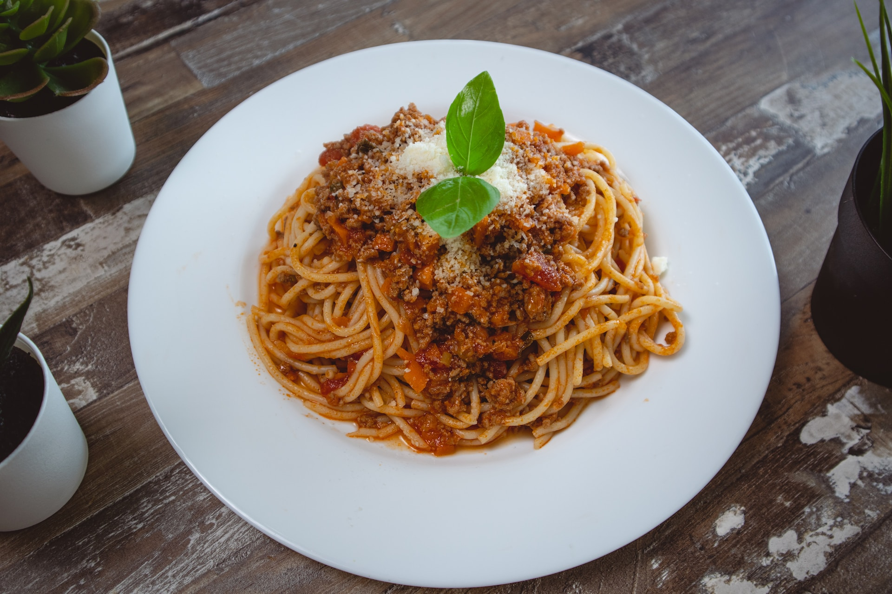

I Feel Recognized, But There’s More To Say
My blog post on how sometimes I feel like I do not fit in even with those who look like me, here's what I have experienced and how I am handling it.

Does Your Major in College Really Matter? Otters Podcast
A group of college students discuss if our majors in college really matter by reflecting on how we chose our majors and how that's affected our journeys in college.

How To Make Spaghetti
A very delicious spaghetti recipe I just learned!
Tilt Up Panel Blog
I wrote this blog post over the summer for my internship which is where I discovered my passion for creating blogs.